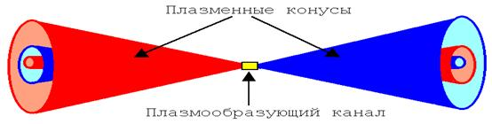

В статье приведены результаты исследований плазмы, в ходе которых в плазме наблюдались регулярные структуры. В плазме обнаружены фракталы, представляющие собой системы многослойных вложенных конусов. Показано, что эволюция плазмы происходит в такой последовательности: от хаотического состояния плазменного образования к упорядоченному состоянию плазмы, затем к хаотическому состоянию двух плазменных образований и последующему рассеянию. Такая динамика плазмы указывает на реальность существования этапа плазмообразования, в котором происходит уменьшение энтропии. Выявлены необычные проявления структурированной фрактальной плазмы. Такая плазма легко прожигает отверстия в вольфраме, в то время как на диэлектрики, например, на бумагу она не оказывает такого действия.
Авторы этого эксперимента убеждены, что наблюдают некую особую плазму, пытаются исследовать ее структуру, и делают далеко идущие выводы о свойствах вакуума.
Давно и хорошо известно, что любой электрический разряд сопровождается мощным электромагнитным излучением очень широкой полосы. Известно, что электрический разряд имеет малую длительность, но очень большую пиковую мощность, от десятков до тысяч киловатт. Общая схема этих процессов давно изучена - пробивается искровой промежуток или перегорает проволочка, образуется проводящая плазменная перемычка между электродами, ток быстро нарастает, в зоне разряда интенсивно выделяется тепловая энергия. Вспышка же, которая сопровождает (окружает) разряд в газе, обусловлена быстрой ионизацией молекул окружающего газа, электромагнитным излучением, которое идет от разогретой плазмы, в области искрового промежутка
Все это известные факты, и если их не забывать, то можно легко понять, что прожигает отверстия в фольге не плазма, а мощный пучок электромагнитного излучения, сформированный в искровом промежутке (в плазмообразующем канале). Процесс идет по следующей схеме – пробивается искровой промежуток, в этом промежутке формируется некая упорядоченная плазменная структура, которая преобразует энергию электрического разряда, в энергию микроволнового электромагнитного излучения. Излучение имеет пиковую мощность до нескольких сотен киловатт и легко ионизирует окружающий газ (воздух). Это же излучение прожигает отверстия и оставляет следы на мишенях. Это же излучение проходит через крышку деревянного стола и ионизирует воздух. И ничего удивительного в этом нет.
Однако форма и структура этого излучения необычны и заслуживают самого пристально внимания. Самое главное в том, что такое излучение не может быть тепловым, то есть формируется оно явно не за счет хаотичного теплового движения заряженных частиц, в искровом промежутке. Наличие конусных фрактальных структур, говорит о том, что это когерентное излучение (лазер). Такое излучение может генерироваться, только при помощи некой высокоорганизованной системы колеблющихся заряженных частиц, а тот факт, что эта система формируется самопроизвольно и имеет фрактальную структуру, четко согласуется с теорией кристаллической плазмы.
См сайт WWW.grinvladimir.narod.ru
http://www.milogiya.narod.ru/grinev.htm
www.edu.of.ru/attach/17/2410.htm
На Рис.18 см. сайт http://www.filosof.net/disput/kosinov/fenomen.htm

Видны две системы сопряженных конусов, это и есть структура излучения идущего из некой упорядоченной структуры, расположенной в центре искрового промежутка (плазмообразующий канал). Вполне очевидно, что такая форма излучения может быть сформирована только синхронно колеблющимися заряженными частицами, в виде многослойного цилиндрического конденсатора с фрактальной структурой. Вполне очевиден тот факт, что это когерентное излучение, которое можно сфокусировать. Только так можно объяснить свечение под крышкой стола.
Конечно же, проходя через воздух, излучение создает облако плазмы, той же формы, а после прекращения генерации в искровом промежутке, это облако плазмы еще некоторое время существует самостоятельно, но пробивает отверстия и выжигает фольгу не эта плазма, а мощный импульс электромагнитного микроволнового излучения. Формируется этот импульс, в момент протекания тока разряда, через искровой промежуток (плазмообразующий канал).
В итоге можно с полной уверенностью констатировать экспериментальный факт самопроизвольного формирования многослойного цилиндрического конденсатора из заряженных частиц плазмы. Экспериментально доказано и то, что плазменный кристалл способен выполнять роль когерентного генератора электромагнитного излучения.
Переход плазменного кристалла в режим генерации обеспечивается сильным внешним магнитным полем, которое искажает равновесные орбиты заряженных частиц и тем самым заставляет движущиеся частицы синхронно (когерентно) излучать.